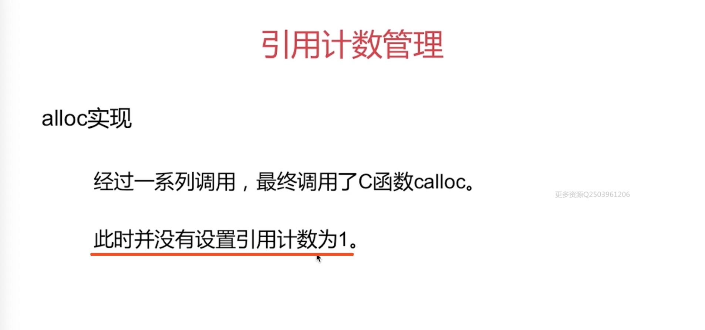
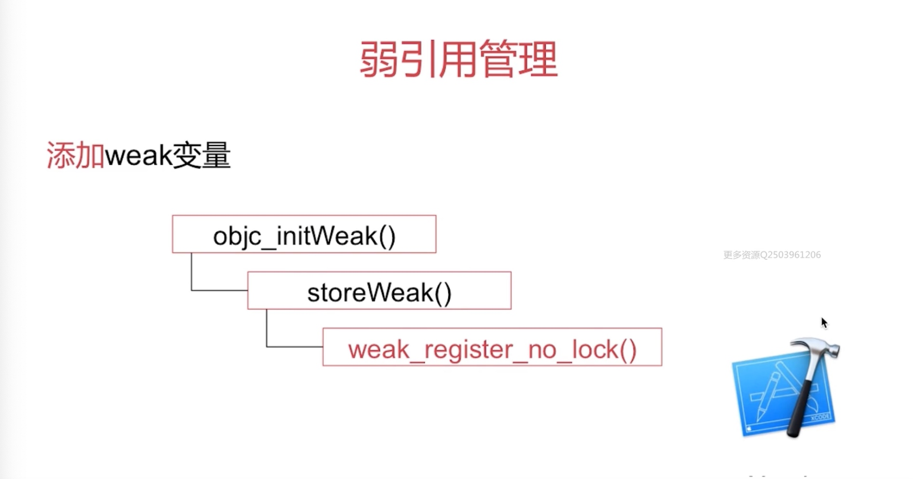
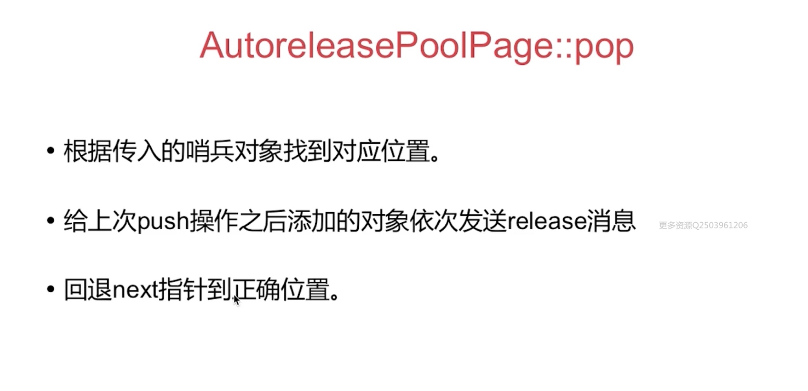
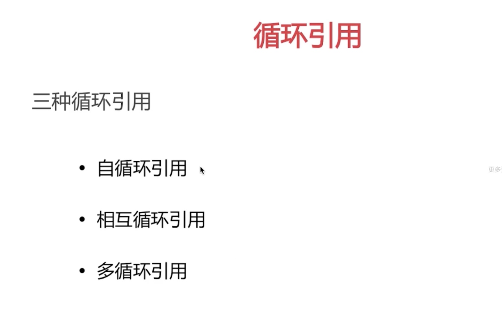

内存布局
- stack(栈区): 方法调用,函数等都是在栈区
- heap(堆区): 通过 alloc 生成的对象等 都在堆区,包括 block 也是会 copy 到堆区
- bss: 未初始化的数据
- data: 已初始化的全局变量等
- text: 代码段
内存管理方案

TaggedPointer
- Tagged Pointer专门用来存储小的对象，例如NSNumber和NSDate
- Tagged Pointer指针的值不再是地址了，而是真正的值。所以，实际上它不再是一个对象了，它只是一个披着对象皮的普通变量而已。所以，它的内存并不存储在堆中，也不需要malloc和free。
- 在内存读取上有着3倍的效率，创建时比以前快106倍。
NONPOINTER_ISA
于64位架构下的 iOS 应用程序采用的是 NONPOINTER_ISA 内存管理方案
NONPOINTER _ISA 内存管理方案的涵义：实际上在64位架构下 isa 这个指针本身是占64个 比特位的，那么实际上有32位或者说40位就够用了，剩余这些位数的比特位实际上是浪费的，苹果为了提高内存的利用率，在 isa 当中剩余的这些比特位当中，存储了一些关于内存管理当面的相关数据内容，所以说这个叫非指针型的 isa

在 arm64 架构下，isa 指针一共有 64 个bit位，这 64 个bit位都存储了哪些内容：
- 第 0 位 是一个叫 indexed 的标志位，如果这个位置是 0 ，代表的是我们使用的 isa 指针只是一个纯的 isa 指针，它里面的内容就直接代表当前对象的类对象的地址，如果这个标志位是 1 的话就代表这个 isa 里面存储的不止是它的类对象的地址，而且还有内存管理方面的数据，那就是我们这里面要讲到的非指针型的 isa
- 第 1 位 has_assoc ，是表示当前对象是否有关联对象，0 代表没有，1代表有
- 第 2 位 has_cxx_dtor ,这个函数或者说这个变量标志表示的是当前对象是否有使用 C++ 相关的代码，那么在 ARC 当中也可以这个表示位来表示有些对象是通过 ARC 来进行内存管理的
- 3-35 位 表示的是当前对象的类对象的指针地址（一共有33位01的bit来表示当前对象的类对象的指针地址，我们需要把这个这个位置全部拿出来再去计算它对应的类对象的实际的指针地址）
- 36-41 位 这 6 位代表的是 magic 字段（不讲解）
- 42 位 是 weakly_referenced 就标识了这个对象是否有相应的弱引用指针
- 43 位 deallocating 标志当前对象是否正在进行 dealloc 操作
- 44 位 has_sidetable_rc 这个0是指当前 isa 指针当中如果所存储的引用计数已经达到了上限的话，那么需要外挂一个 sidetable 数据结构去存储相关的引用计数内容，那就是接下里要讲解的散列表
- 45-63 位 代表的是 extra_rc 也就是额外的引用计数，当引用计数在很小的值范围之内的话就会存到 isa 指针当中，而不是有单独的引用计数表去存储它
通过对 NONPOINTER_ ISA 的 64 个bit位的分析，就应该清楚关于内存管理不仅仅是散列表，其实还有 isa 部分的 extra_rc 来存储相关的引用计数值

散列表方案在源码中是通过 Side Tables() 结构来实现的
Side Tables() 结构是什么？
在他的结构下面挂了很多 Side Table 数据结构，这些数据结构在不同的架构上面是有不同个数的，比如在非嵌入式系统当中，Side Table 这个表一共有 64 个，在这里解释一下，Side Tables() 实际上是一个哈希表，可以通过一个对象指针来具体找到它对应的引用计数表或者说弱引用表在哪一张具体的 Side Table 当中
Side Table的结构

实际上 Side Table 结构就包含了以下三个元素
- 自旋锁 (spinlock_t)
- 引用计数表 (RefcountMap)
- 弱引用表 (weak_table_t)
为什么不是一个 SideTable，而是有多个 SideTable 共同组成 SideTables？

假如说只有一张 SideTable ，那么在内存中分配的所有对象的引用计数或者说弱引用存储都放到一张大表当中，这个时候如果说要操作某一个对象的引用计数值进行修改，比如说加一减一的操作，由于所有的对象可能是在不同的线程当中去分配创建的，包括调用他们的 retain，release等方法也可能是在不同线程当中操作的，那么这个时候再对这张表进行操作的时候，需要进行加锁处理才能保证对数据的访问安全，在这个过程当中就存在了效率问题，如果现在已经有一个对象在操作这张表，那么下一个对象就要等前一个对象操作完后把锁释放之后它才能操作这张表
系统为了解决效率问题引用了分离锁的技术方案
分离锁: 提高访问效率
可以把内存对象所对应的引用技术表可以分拆成多个部分，比如说把它分拆成8个，分拆成8个需要对这8个表分别加锁
比如说某一个对象A在第一张表里面，另一个对象B在另一张表中，那么当A和B同时进行引用计数操作的时候可以并发操作，但是如果按照一张表的情况下他们就需要顺序操作
怎样实现快速分流？
快速分流指的是通过一个对象的指针如何快速的定位到它属于哪张 side Table 表？

side Tables 的本质是一张哈希表，这张哈希表当中可能有64张具体的 side Table ，然后存储不同对象的引用计数表和弱引用表
哈希表的概念这里简单讲解一下：
看这幅图，左侧是一个对象，这个对象指针可以作为一个 Key ，经过哈希函数的一个运算然后会计算出一个值来决定出这个对象它所对应的 side Table 是哪张或者说在数组的索引是多少

哈希查找的过程：
比如说给定值是对象的内存地址，目标值是 side Tables 结构当中的下标索引
现在给一个对象的内存指针地址，通过一个哈希函数把指针作为哈希函数的参数，然后经过函数的运算就可以得出一个数组的下标索引值
哈希函数对于 side Tables 具体的情况，实际上表达式就是这样的，也就是说通过对象的内存地址来和 side Tables 数组的个数来进行取余运算，这样就可以计算出一个对象指针它所对应的引用计数表或者弱引用表在哪一张具体的 side Table 当中
为什么通过哈希查找？
是为了提高查找效率，比如说存储的时候是通过这个哈希函数进行存储的，比如说这个数组个数是8，内存地址假设是1的话，那么取余就是1，就把这个对象存储到数组对应第一个位置，当我们去访问这个对象的时候，也不需要根据这个数组进行遍历来比较指针值，而是也通过这个函数进行一次运算去取值，这个过程不涉及遍历的操作，自然查找效率是比较高的，内存地址的分布是均匀分布，可以称这个哈希函数为一个均匀散列函数









